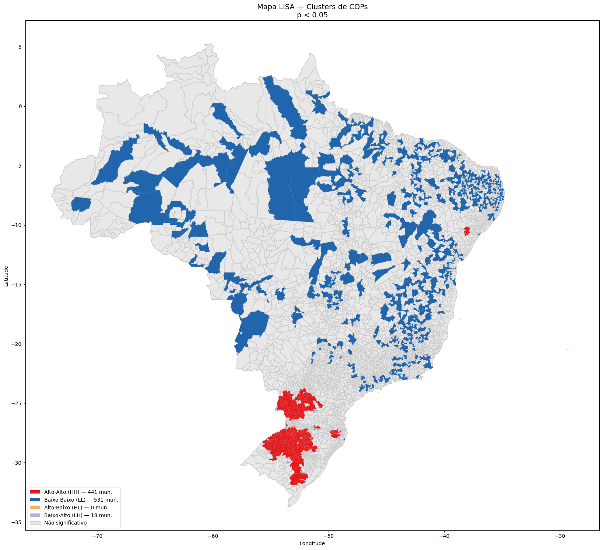
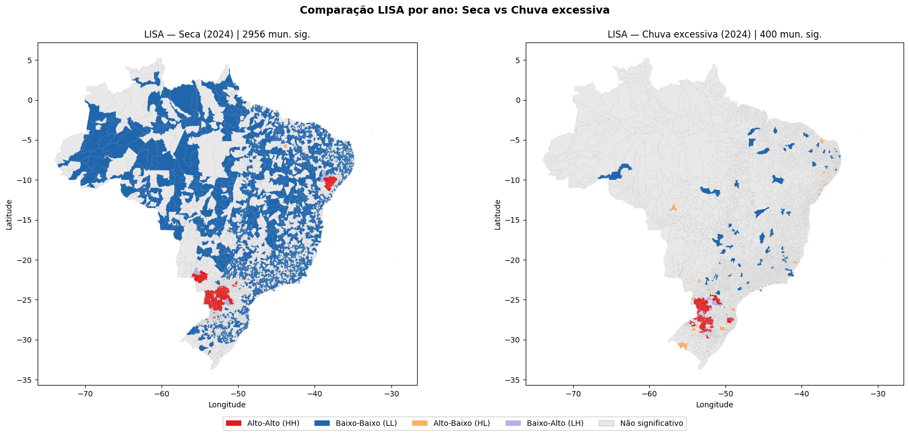
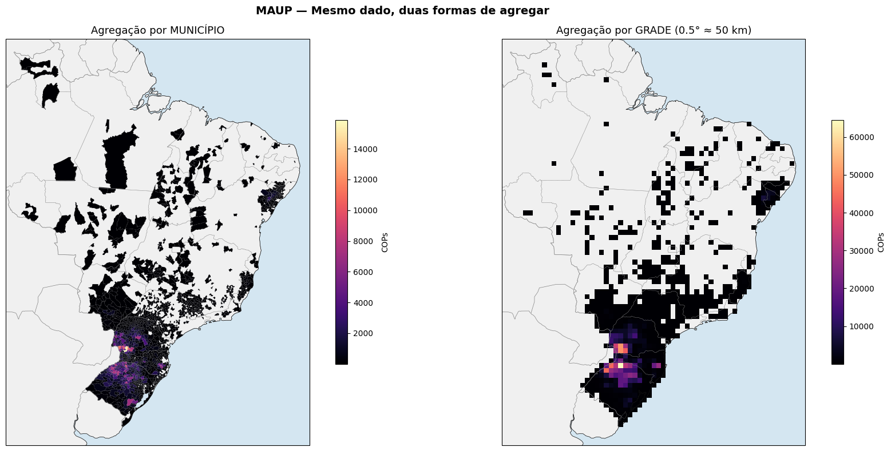

Bloco 2 — LISA, MAUP, falácia ecológica e Getis-Ord Gi*
O Bloco 1 mostrou que existe um padrão espacial nos sinistros do Sicor (I de Moran global significativo). Ficaram três perguntas em aberto:
Quais municípios formam esses clusters?
Se mudar a unidade de análise, o resultado muda?
Quais regiões são realmente hotspots estatisticamente significativos?
Técnica |
Pergunta que responde |
|---|---|
LISA |
Quais municípios formam clusters HH/LL/HL/LH? |
MAUP |
Mudar a escala (grade vs município vs UF) altera o resultado? |
Falácia ecológica |
Posso atribuir ao produtor individual um padrão observado no município? |
Gi* |
Onde estão os hotspots de COPs com significância diferenciada para alto vs baixo? |
Parte 0 — recarregamento
Mesmo boilerplate do Bloco 1 — KDE e I de Moran global (município) (carregar Sicor, agregar por município, montar shapefile e matriz Queen):
from libpysal.weights import Queen
pesos = Queen.from_dataframe(gdf_analise)
gdf_analise = (gdf_analise.drop(index=pesos.islands)
.copy()
.reset_index(drop=True))
pesos = Queen.from_dataframe(gdf_analise)
pesos.transform = 'r'
Parte 1 — LISA (Anselin 1995)
Conceito
O I de Moran global é um único número para a região inteira; é como dizer “a temperatura média do Brasil é 25 °C”. O LISA decompõe esse indicador em uma contribuição por município, classificando cada um em HH/LL/HL/LH ou não significativo.
from esda.moran import Moran_Local
valores = gdf_analise['total_cops'].values
lisa = Moran_Local(valores, pesos, permutations=999)
gdf_analise['lisa_q'] = lisa.q
gdf_analise['lisa_p'] = lisa.p_sim
gdf_analise['tipo_cluster'] = [classificar_lisa(q, p, alpha=0.05)
for q, p in zip(lisa.q, lisa.p_sim)]
Tabela típica do exemplo: dos 5.571 municípios, 1.728 apresentam padrão local significativo (p < 0,05):
1.277 LL — regiões com poucas COPs cercadas por outras com poucas;
434 HH — epicentros de sinistros;
17 LH — outliers onde um município com poucas COPs está cercado por vizinhos com muitas.
Mapa LISA

Figura 48 - Mapa LISA. O Sul gaúcho aparece em HH (vermelho) e o interior do Nordeste em LL (azul). Os outliers HL/LH são poucos mas frequentemente concentrados em zonas de transição.
Top 10 municípios HH
hh = (resultado_lisa
.query("quadrante == 1 and p_valor < 0.05")
.nlargest(10, 'total_cops'))
hh[['municipio', 'total_cops', 'I_local', 'p_valor']]
Esses municípios são candidatos óbvios para inspeção operacional — qualquer aumento súbito em HH merece investigação.
Parte 2 — MAUP (problema da unidade de área modificável)
O MAUP é o efeito de mudar a unidade de agregação sobre o resultado estatístico. Comparamos três níveis de agregação:
municipal (CD_MUN);
microrregião (CD_MICRO);
mesorregião (CD_MESO).
for nivel, col in [('Município', 'CD_MUN'),
('Microrregião', 'CD_MICRO'),
('Mesorregião', 'CD_MESO')]:
cops_n = (df.groupby(col).size()
.reset_index(name='total_cops'))
gdf_n = gdf_mun.dissolve(by=col).reset_index()
gdf_n = gdf_n.merge(cops_n, on=col, how='left').fillna(0)
w_n = Queen.from_dataframe(gdf_n); w_n.transform = 'r'
moran_n = Moran(gdf_n['total_cops'].values, w_n, permutations=999)
print(f'{nivel:<15} I={moran_n.I:.4f} p={moran_n.p_sim:.4f}')

Figura 49 - Comparação MAUP entre município, microrregião e mesorregião. A intensidade do I de Moran muda — geralmente cai com a agregação — e até o padrão dos clusters muda.
Aviso
Resultados que dependem da escala não são “errados” — apenas exigem que o nível de agregação seja parte da conclusão reportada. Sempre que possível, refaça a análise em mais de uma escala para checar robustez.
Parte 3 — falácia ecológica
Resultado por município não pode ser atribuído ao produtor individual. Se Bagé/RS é HH no mapa LISA, isso significa que o município, na média, está cercado de muitas COPs — não que todos os produtores de Bagé têm muitas COPs.
A falácia oposta (atomística) também existe: assumir que o padrão médio do produtor explica o padrão municipal.
Nota
Mantenha o nível de inferência consistente com a unidade de análise. Indicadores municipais informam alocação de esforço (auditoria, monitoramento), não conclusões individuais.
Parte 4 — Getis-Ord Gi*
O Gi* é um teste complementar ao LISA, com vantagem importante: ele distingue claramente hotspots (valores altos com vizinhos altos) de coldspots (valores baixos com vizinhos baixos), sem misturar com outliers HL/LH:
from esda.getisord import G_Local
gi_star = G_Local(valores, pesos, transform='r', permutations=999, star=True)
gdf_analise['Gi_star'] = gi_star.Zs
gdf_analise['Gi_p'] = gi_star.p_sim
Classificação com três níveis de confiança (90 / 95 / 99%):
def classificar_gi(z, p):
if p >= 0.10: return 'Não significativo'
if z > 0:
return f'Hotspot {"99%" if p < 0.01 else "95%" if p < 0.05 else "90%"}'
return f'Coldspot {"99%" if p < 0.01 else "95%" if p < 0.05 else "90%"}'

Figura 50 - Mapa Gi* com hotspots em vermelho e coldspots em azul, em três graduações por nível de confiança (90, 95 e 99%). Compare com o LISA: os HH do LISA tendem a coincidir com os hotspots 99% do Gi*, ganhando uma camada extra de robustez.
Parte 5 — cruzamento LISA × Gi*
Uma boa prática operacional é só reportar como hotspot o que aparece em ambos:
gdf_analise['flag_hotspot_robusto'] = (
(gdf_analise['tipo_cluster'] == 'Alto-Alto (HH)') &
(gdf_analise['Gi_p'] < 0.05) & (gdf_analise['Gi_star'] > 0)
)
gdf_analise['flag_hotspot_robusto'].sum()
Resumo do bloco
LISA localiza o cluster, mas sofre com HL/LH falsos quando o ruído é alto.
Gi* confirma hotspot vs coldspot com gradação.
MAUP lembra que a unidade espacial muda o resultado — sempre testar.
Falácia ecológica restringe a inferência: padrão municipal → ação municipal.
Próximos passos
Bloco 3 — IDW, spline RBF e krigagem ordinária — superfícies contínuas para variáveis climáticas.
Estatística espacial aplicada ao risco agrícola: identificando padrões e concentrações de perdas no Proagro — fundamentos teóricos da estatística espacial.